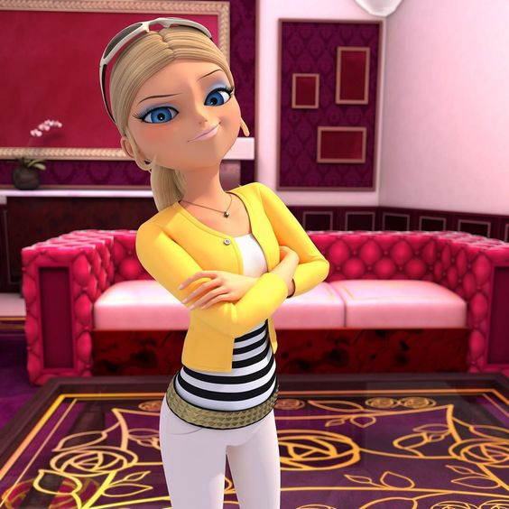

|
Dupain-Cheng |
Agreste |
 Cèsaire |
 Couffaine |
|

Bourgeois |
Agreste |
(kwami) |
(kwami) |
|
Rossi |
Sancoeur |
Stone |
Fu |
Miraculoseste un serial pentru adolescenți japonezo-franco-coreean creat de
Thomas Astruc și produs de Jeremy Zag
co-produs de Zagtoon, Method Animation, Toei Animation și SAMG Animation. Acesta a fost difuzat pentru prima dată în Coreea de Sud în septembrie 2015 pe canalul EBS, iar in Franța pe 18 octombrie 2015 pe TF1 în cadrul programului de tineret TFOU. În SUA, este difuzat pe Nickelodeon de la 6 decembrie 2015.
Serialul este difuzat în 120 de țări din întreaga lume. În România este difuzat pe canalul Disney Channel.Situat în Parisul modern, seria se concentrează pe adoles- cenții Marinette Duppain Cheng și Adrien Agreste . Când apare răul, Marinette se transformă în super-eroul Buburuza, în timp ce Adrien se transformă în super-eroul, Motan Noir, folosind obiecte magice numite Miraculoși care arată ca niște bijuterii obișnuite, până când în ele intră niște creaturi magice numite kwami. Cei doi duc o adevărată viață dublă, întrucât nimeni nu le știe identitatea secretă, înafara de Masterul Fu, gardianul miraculosilor și Iepurix, super-eroul din viitor.
În fiecare episod, ei au de-a face cu răufăcătorul
Hawk Moth,
care își dorește cu orice preț miraculoșii celor doi. Pentru a realiza acest lucru, el își folosește propriul Miraculos pentru a transforma pe oricine are sentimente negative într-un super răufăcător, pe care îl controlează prin intermediul unor fluturi încărcați cu energie negativă numiți akuma.
Deși cei doi eroi îi dejoacă planurile de fiecare dată, el nu se va opri până nu va obține ce vrea, astfel că Marinette și Adrien trebuie să reușească zilnic să-și echilibreze viața normală de adolescent cu cea de super-erou și să salveze Parisul de forțele răului.
La finalul primului sezon ne este arătată prima lupta pe care au avut-o Buburuza și Motan Noir și cum au primit aceștia miraculosii.În al doilea sezon, Marinette începe să fie antrenata de Maestrul Fu și să învețe despre istoria și puterile ascunse ale Miraculoșilor, iar Buburuza recrută trei aliați, Rena Rouge (super-eroul vulpe), Regina Albină (super-eroul albină) și Carapace (super-eroul țestoasă), care să-i ajute să înfrunte răufăcători mai puternici ocazional. La finalul sezonlui, Buburuza, Motan Noir, Rena Rouge, Regina Albină și Carapace îl înfruntă pentru prima dată în persoană pe Hawk Moth, care a format o armată din toți răufăcătorii anteriori. Deși eroii triumfă, Hawk Moth reușește să scape cu ajutorul lui Mayura, deținătorul Miraculosului Păun.
În sezonul al treilea, Hawk Moth își continuă misiunea de a obține Miraculoșii Buburuzei și lui Motan Noir,cu ajutorul lui Mayura și a Sentimonștrilor acesteiacreații din niște pene magice numite amok, asemănătoare cu akuma. Buburuza recrutează și mai mulți aliați,